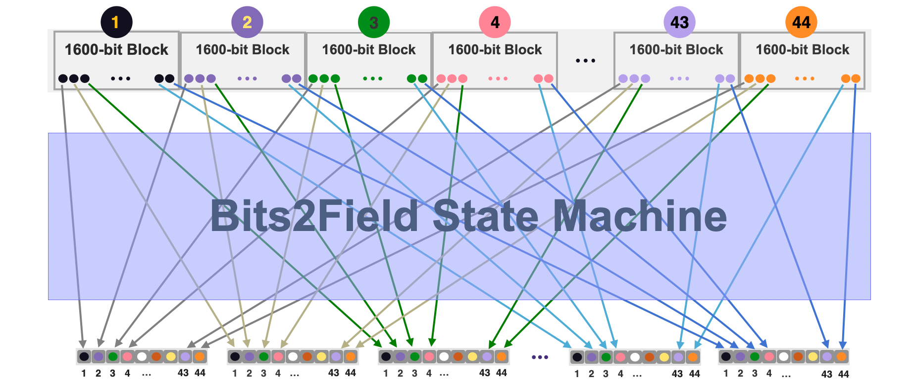
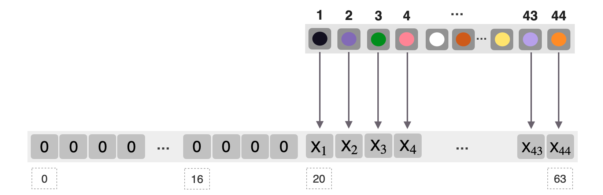

Bits2Field State Machine
The Bits2Field State Machine, sm_Bits2Field.cpp, is one of the auxiliary state machines used specifically for parallelising implementation of the Keccak-f SM.
A Multiplexing Machine
The state machine ensures correct packing of \(\mathtt{44}\) bits from \(\mathtt{44}\) different \(\mathtt{1600}\)-row blocks of the Padding-KK-Bit SM into a single field element.
It operates like a (44 bits to 1 field element) multiplexer between the Padding-KK-Bit SM and the Keccak-f SM.
That is, it takes bits from \(\mathtt{44}\) different blocks, places them into the first 44 bit-positions of a single field element, whereupon the Keccak-f circuit runs.
The name \(\texttt{Bits2Field}\) State Machine refers to the processing where \(44\) bits from \(44\) different blocks of the Padding-KK-Bit SM are inserted into a single field element.
Therefore, although the Keccak-f SM is a binary circuit, instead of executing on a bit-by-bit basis, it is implemented to execute Keccak-f operations on a \(\mathtt{44}\)bits-by-\(\mathtt{44}\)bits basis. This is tantamount to running \(\mathtt{44}\) Keccak-f hashing circuits in parallel.
The Bits2Field SM's multiplexing aimed, at parallelising the Keccak-f circuit sketched, is outlined below.

Mapping 44 Bits To A 64-bit Field Element
Suppose operations are carried out in a field \(\mathbb{F}_p\) of \(\mathtt{64}\)-bit numbers. The smallest field used in the zkProver is the Goldilocks Field \(\mathbb{F}_p\) where \(p = 2^{64} - 2^{32}+1\).
After multiplexing, the 44 bits are loaded into the first 44 least significant bit-positions of the field element as depicted in Figure 2 below.
A field element as an input to the Keccak-f circuit is of the form,
and it is composed of 20 zeroes and 44 meaningful bits related to the committed polynomials.
Given the capacity of \(2^{23}\) in terms of the state machine evaluations (i.e., the degree of polynomials) and the Keccak-f's \(\texttt{SlotSize} = 155286\), one obtains \(2^{23} / 155286 = 54.020375307\) Keccak-f slots. Therefore, a total of \(54\) slots \(\times\) \(44\) blocks \(= 2376\) Keccak blocks can be processed. This is a big improvement from the previous \(477\) blocks of the 9 bits to 1 field element multiplexing (i.e., \(53 \times 9 = 477\).)

The Bits2Field PIL Code
The Bits2Field executor, sm_Bits2Field.cpp, executes the multiplexing of forty-four \(\mathtt{1600}\)-bit blocks into \(\mathtt{1600}\) field elements, where each is a \(\mathtt{N}\)-bit field element. See Figure 2 above, where \(\mathtt{N = 64}\).
The question here is how to identify each of the original nine bits of the field element, so as to track their corresponding resultant \(\mathtt{XOR}\) values or \(\mathtt{ANDP}\) values?
Note that every bit \(\mathtt{b_{i,j}}\) from the \(\mathtt{i}\)-th \(\mathtt{1600}\)-bit block is placed at the \(\mathtt{2^{i}}\)-th position of the \(\mathtt{N}\)-bit field element.
The PIL code therefore uses factors denoted by \(\mathtt{Factor}\), such that \(\mathtt{Factor \in \{ 1, 2, 4, \dots , 2^{43} \}}\), and a \(\mathtt{Fieldlatch}\) after running through forty-four \(\mathtt{1600}\)-bit blocks.
Suppose \(\mathtt{N = 64}\). Then the 44 least significant bits of the \(\mathtt{64}\)-bit field element looks like this:
The constraint checked is therefore,
The accumulated field element at the end of the execution (every forty-fourth row of the execution trace) is checked against the Keccak-f input \(\mathtt{KeccakF.a}\) with the boundary constraint,
The PIL code is given below.
include "keccakf.pil";
namespace Bits2Field(%N);
pol constant FieldLatch; // [0:44,1]
pol constant Factor; // 1,2,4,8,...,2**43
pol commit bit;
pol commit field44;
field44' = (1-FieldLatch)*field44 + bit*Factor;
bit *(1-bit) = 0;
FieldLatch*(field44 - KeccakF.a44) = 0;